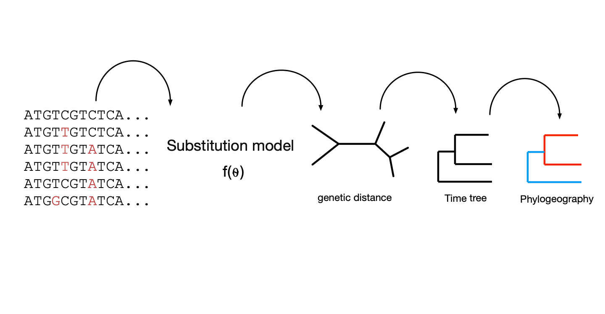

Introduction to Phylogenetics
JT McCrone
Andrew Rambaut group
University of Edinburgh
Phylogenetics model the unobserved past
Building a tree (distance)
Building a tree (Likelihood)
Placing a tree in time
Building a time tree

Building a time tree